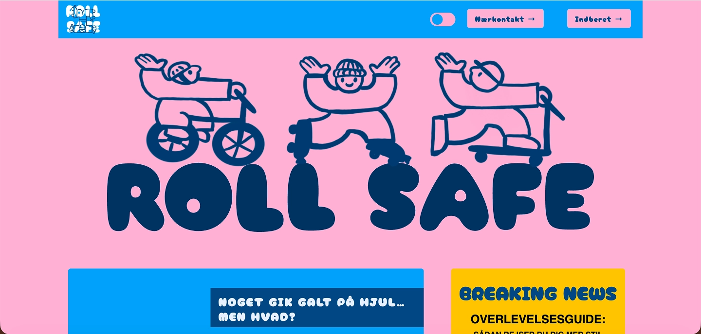
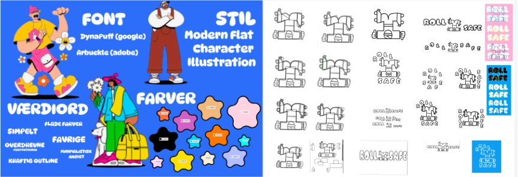
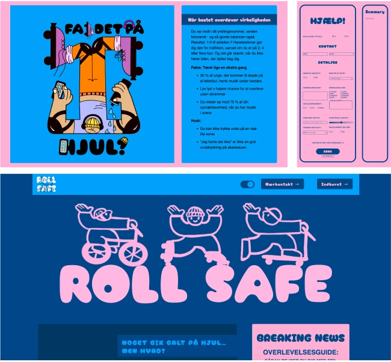

ANIMATION
LØSNING
LØSNING
I Tema 4 udviklede jeg et individuelt digitalt projekt med fokus på brugergrænsefladeudvikling, hvor design, grafik og funktionalitet blev samlet i én løsning. Opgaven tog udgangspunkt i et kreativt og humoristisk “emergency site”, der gennem en visuel og fortællende tilgang formidlede et alvorligt budskab om sikkerhed.
LÆS MEREINDHOLD
Den færdige løsning bestod af et website med et gennemgående visuelt koncept, hvor jeg selv havde udviklet illustrationer og UI-elementer i Adobe Illustrator og eksporteret dem som SVG til web. Sitet indeholdt interaktive elementer skabt med CSS og JavaScript, herunder animationer, simple brugerinteraktioner, forms og dialogelementer.
DARKMODE
Der blev desuden arbejdet med både light og dark mode, transitions og custom properties i CSS for at skabe en moderne og sammenhængende brugeroplevelse.
GITHUB
Løsningen blev publiceret via GitHub Pages og fungerede som en samlet demonstration af mine færdigheder inden for visuel brugergrænsefladeudvikling, frontend og designproces.
VIS MINDREPROCES
PROCES
Processen startede med idéudvikling og research, hvor jeg arbejdede med brainstorming, valg af emne, målgruppe og formål. Herefter udviklede jeg et visuelt koncept gennem moodboards, stilreference-analyse og værdier for tone og udtryk. Jeg arbejdede analogt med skitser på papir og lavede efterfølgende paper prototypes for at teste struktur og flow, før jeg gik videre til digitale wireframes.
LÆS MEREDESIGNFASEN
I designfasen arbejdede jeg intensivt i Adobe Illustrator med udvikling af illustrationer, figurer og infografiske elementer. Jeg fokuserede på komposition, farver, typografi og stilkonsistens, og dokumenterede processen gennem styletiles og layoutskitser. Efterfølgende blev grafikken eksporteret korrekt til web i SVG-format med fokus på kvalitet og performance.
KODNING
Den tekniske del bestod af implementering i HTML, CSS og JavaScript. Her arbejdede jeg med forms, animationer, DOM-events, variabler og betingelser i JavaScript samt mere avanceret CSS som transitions, popovers, dialog-elementer og dark mode. Undervejs testede jeg løbende løsningen og justerede design og funktionalitet baseret på feedback fra undervisere og peer-to-peer feedback.
VIS MINDRELÆRING
LÆRING
Tema 4 har givet mig en langt dybere forståelse for samspillet mellem design og udvikling i digitale brugergrænseflader. Jeg har lært at omsætte et visuelt koncept fra idé og skitse til færdig, fungerende løsning, hvor grafik, kode og interaktion hænger sammen.
LÆS MEREPRAKTISK ERFARING
Jeg har opnået praktisk erfaring med Adobe Illustrator til udvikling af vektorgrafik målrettet web og er blevet mere sikker i at arbejde med SVG-filer og eksport til digitale løsninger. Samtidig har jeg fået en grundlæggende, men solid forståelse for JavaScript og hvordan sproget bruges til at skabe funktionalitet og interaktion i brugergrænseflader.
STYRKET FORSTÅELSE
Derudover har temaet styrket min forståelse for avanceret CSS, herunder animationer, custom properties og dark mode, samt vigtigheden af tilgængelighed og brugervenlighed i designvalg.
Samlet set har Tema 4 gjort mig mere tryg i hele processen fra idé og visuel udvikling til teknisk implementering og dokumentation – og givet mig et stærkere fundament som multimediedesigner.
VIS MINDRE